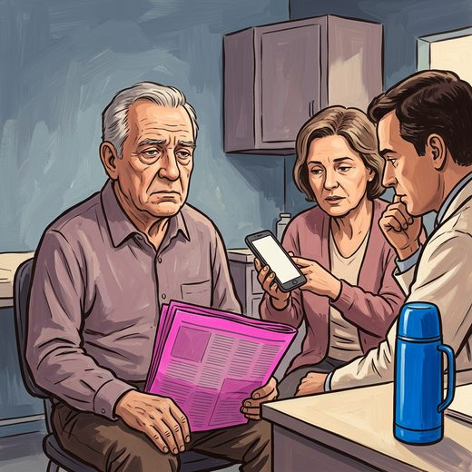

Consulta rápida à beira do leito
Condutas, doses e interações.
Referências da aula · 7
- Kapur VK, Auckley DH, Chowdhuri S, Kuhlmann DC, Mehra R, Ramar K, et al. Clinical practice guideline for diagnostic testing for adult obstructive sleep apnea: an American Academy of Sleep Medicine clinical practice guideline. J Clin Sleep Med. 2017;13(3):479-504. PMID 28162150. doi:10.5664/jcsm.6506.PubMedDOI
- Brower D, Pan E, Goss W, Kwon Y, Healy WJ. Obstructive sleep apnea and aging: a narrative review. Sleep Med Res. 2025;16(3):139-50. PMID 41459405. doi:10.17241/smr.2025.02964.PubMedDOI
- Smith MT, McCrae CS, Cheung J, Martin JL, Harrod CG, Heald JL, et al. Use of actigraphy for the evaluation of sleep disorders and circadian rhythm sleep-wake disorders: an American Academy of Sleep Medicine clinical practice guideline. J Clin Sleep Med. 2018;14(7):1231-7. PMID 29991437. doi:10.5664/jcsm.7230.PubMedDOI
- Livingston G, Huntley J, Liu KY, et al. Dementia prevention, intervention, and care: 2024 report of the Lancet standing Commission. Lancet. 2024;404:572-628. PMID 39096926. doi:10.1016/S0140-6736(24)01296-0.PubMedDOI
- Kitakata H, Kohno T, Fukuda K. Sleep-disordered breathing in the elderly: is it distinct from that in the younger or middle-aged populations? J Thorac Dis. 2018;10(Suppl 9):S1102-7. PMID 29849205. doi:10.21037/jtd.2018.03.179.PubMedDOI
- Lin Y, Zhao J, Xiao W, Ding F, Fang Z, Guo L, et al. Barriers to and facilitators of implementing obstructive sleep apnea screening in stroke patients: a scoping review protocol. Front Neurol. 2025;16:1690372. PMID 41180537. doi:10.3389/fneur.2025.1690372.PubMedDOI
- Guay-Gagnon M, Vat S, Forget MF, et al. Sleep apnea and the risk of dementia: a systematic review and meta-analysis. J Sleep Res. 2022 (; citada pela Comissão Lancet 2024). PMID 35366021. doi:10.1111/jsr.13589.PubMedDOI
Documentos oficiais
Leis e publicações do Ministério da Saúde sobre o cuidado da pessoa idosa, de acesso livre.
Abrir os documentos